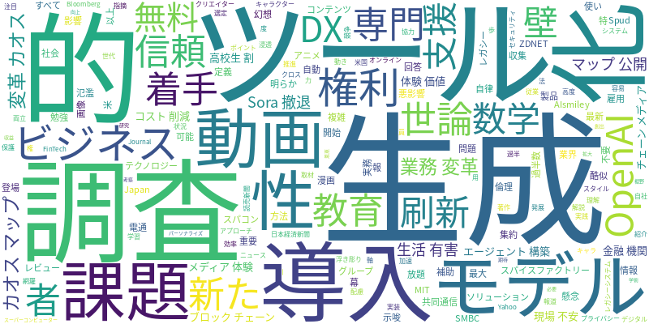

☁️ 今日のトレンドワード

📰 今日のピックアップニュース (10件)
生成AI業務変革カオスマップ公開
AIsmileyが、生成AIによる業務変革のカオスマップを公開しました。実務を再定義する「自律・自動化・専門特化」の3軸で、200製品以上の最新ソリューションが集約されています。これにより、企業は自社の課題に合ったAIツールの選定や導入が容易になります。
OpenAI、新モデル着手しSora撤退
OpenAIが動画生成モデルSoraから撤退し、新たなモデルSpudの開発に着手したと報じられています。これにより、AIの「使い放題」という幻想に幕が下り、より高度で専門的なAI技術の開発競争が加速する可能性が示唆されています。
米世論調査、AIは生活に有害と過半数
米国の世論調査で、過半数の回答者がAIは生活に有害であると考えていることが明らかになりました。雇用への影響や教育システムへの悪影響などが懸念されており、AIの社会実装における倫理的・社会的な課題が浮き彫りになっています。
信頼できるビジネスAIエージェント構築法
ZDNET Japanでは、ビジネスで活用できる信頼性の高いAIエージェントを構築するための方法について解説しています。セキュリティ、プライバシー、倫理的な配慮など、AI導入における重要なポイントを網羅し、実践的なアプローチを紹介しています。
AI生成コンテンツ、権利問題が課題
AIによって生成されたアニメや漫画のキャラクターに酷似した動画や画像が氾濫していますが、著作権などの権利問題が複雑化し、業界の対応が鈍い状況です。クリエイターの権利保護とAI技術の発展の両立が求められています。
高校生の7割が生成AIを利用
共同通信の報道によると、高校生の7割が生成AIを情報収集や勉強の補助に利用していることが分かりました。若い世代におけるAIツールの浸透度と、学習スタイルへの影響が注目されています。
AIで調査コスト削減、レガシー刷新
DX支援を行うスパイスファクトリーが、AIツールを活用して調査コストを削減し、レガシーシステム刷新を支援するサービスを開始しました。効率的なDX推進に向けた、AI活用の新たな一歩を示しています。
金融機関AI導入、現場の不安が壁
SMBCグループへの取材によると、金融機関におけるAI導入の最大の壁は「現場の不安」であることが明らかになりました。技術的な課題だけでなく、従業員の理解と協力を得ることの重要性が指摘されています。
スパコン不要の無料AI数学ツール
MITテクノロジーレビューは、スーパーコンピューターを必要としない無料のAIツールが登場し、すべての数学者がAIの恩恵を受けられるようになったと報じています。学術研究や教育におけるAI活用の裾野が広がる可能性を示唆しています。
ブロックチェーン×AIでメディア体験価値向上
電通報では、ブロックチェーン技術とAIを組み合わせることで、メディアにおける「体験価値」がどのように拡大していくかについて考察しています。コンテンツのパーソナライズや新たな収益モデルの創出などが期待されます。
今日のAI・テック業界は、生成AIの進化と社会実装における多様な動きが見られました。業務変革を支援するカオスマップの公開（ID:0）や、調査コスト削減サービス（ID:6）など、ビジネス現場でのAI活用が加速しています。一方で、OpenAIの動向（ID:1）や、AI生成コンテンツの権利問題（ID:4）、そしてAIに対する社会的な懸念（ID:2）も浮き彫りになり、技術開発と倫理的・法的な課題のバランスが重要視されています。金融機関でのAI導入における現場の不安（ID:7）は、人間中心のAI活用への示唆を与えています。また、数学者向けの無料AIツール（ID:8）や、ブロックチェーンとAIの連携（ID:9）など、AIの応用範囲の広がりと democratisation（民主化）も進んでいます。高校生のAI利用率（ID:5）の高さは、次世代のAIリテラシーの重要性を示唆しており、AI技術の発展と社会との調和に向けた多角的な議論が求められています。